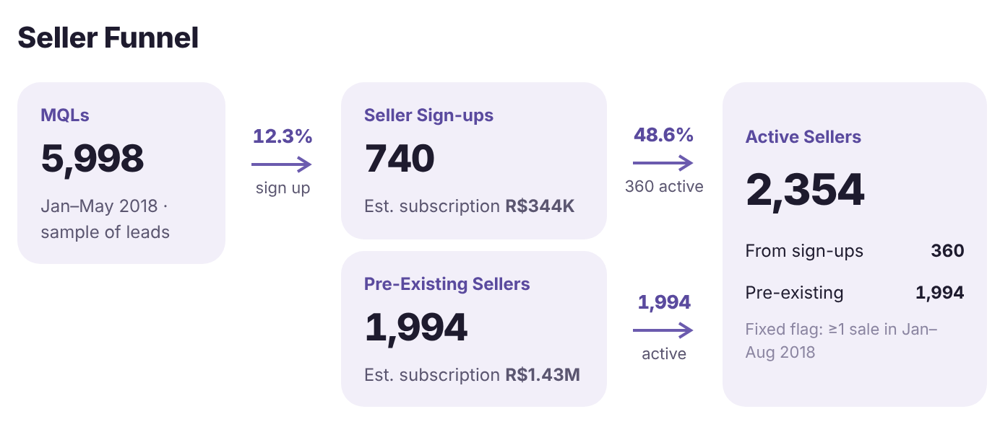

Olist: from seller lead to customer revenue
A Brazilian marketplace's seller funnel joined to its customer orders. Only 12.3% of leads sign up, and 51% of sign-ups never make a sale.
Skills it proves
SQL data modeling
Data cleaning & validation
Funnel & cohort analysis
Dashboard design
Python automation
Data visualization
See them in the skills matrix ↓